Профсоюзные ресурсы
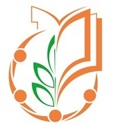
МГО Общероссийского Профсоюза образования
Профсоюз образования ЮЗАО и ТиНАО
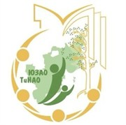
СМП ЮЗАО-ТиНАО
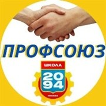
Профсоюз 2094
Молсовет 2094
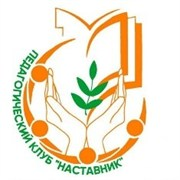
Педагогический клуб «Наставник»
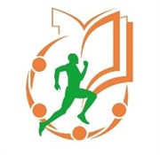
Жить. Учить. Бежать
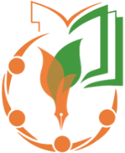
САМП
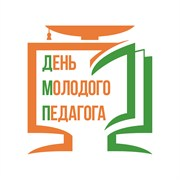
День молодого педагога (ДМП)
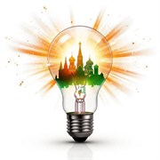
САМП_ПроСвет
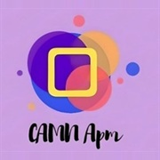
САМП_арт
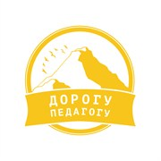
Дорогу педагогу
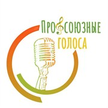
Профсоюзные голоса
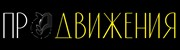
ПроДвижения